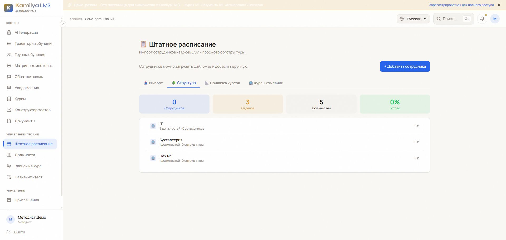
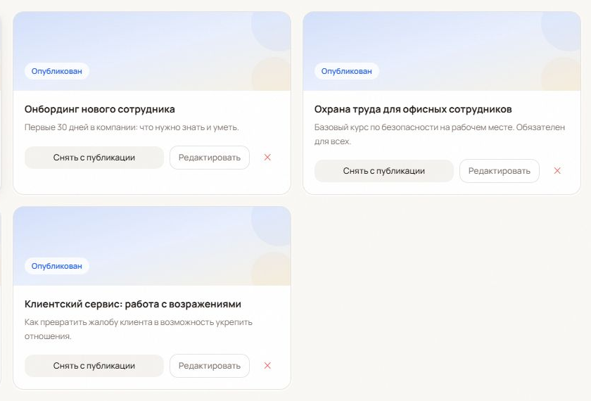
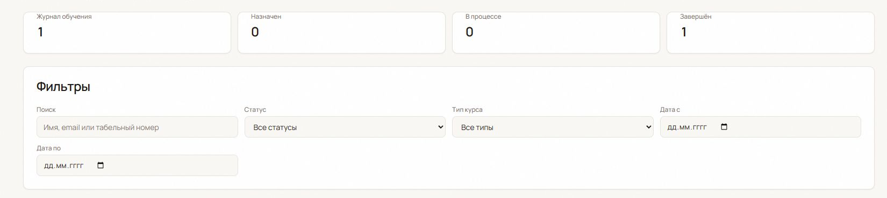
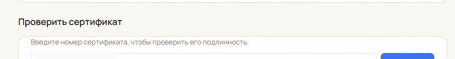

Руководству
Сложно быстро понять, кто готов к работе, где есть просрочки и какой материал актуален.
Единый процесс для подготовки сотрудников: от корпоративных материалов и назначения обучения — до подтверждённого результата и прозрачности для руководителей.
Сложно быстро понять, кто готов к работе, где есть просрочки и какой материал актуален.
Назначения, напоминания и отчёты собираются вручную — и не дают общей картины.
Неясно, что именно изучить, где найти нужный материал и когда задача считается освоенной.
Проблема не в количестве курсов. Проблема — в разрыве между знаниями компании, действиями людей и видимым результатом.
Подразделения и должности дают основу, на которой проще строить обязательное обучение, ввод в должность и единые требования к готовности.


Команда обучения готовит и публикует материалы, а организация получает единый источник для вводных, обязательных и сервисных программ.
Получает согласованный набор обучения для своей роли и подразделения.
Нужный материал можно быстро направить затронутой группе без новых списков и рассылок.
Видит, что обучение назначено и требует внимания до того, как это станет проблемой в работе.
Так корпоративное обучение становится частью управляемого ввода в работу, а не отдельной административной задачей.
В едином журнале можно отфильтровать записи и увидеть, что уже назначено, что находится в работе и что завершено.


После успешного прохождения сотрудник получает сертификат. Отдельная форма позволяет проверить предъявленный номер документа.
Задаёт приоритеты, видит риски и принимает решения на основе статуса обучения.
Поддерживает материалы, программы и назначение без постоянной ручной координации.
Проходят назначенное обучение, выполняют проверки знаний и видят свои документы о завершении.
Меньше поиска и уточнений. Больше ясности, что сделать сейчас и какой результат нужен.
Небольшой пилот позволяет проверить не интерфейс, а применимость процесса к вашей реальной работе.
Показатели пилота — не обещанные результаты, а совместно согласованные измерения для выбранного процесса.
На стартовой встрече определим первую группу, ожидаемый результат, владельца содержания и критерии пилота.